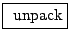

Section 4.2 described using ADSR envelopes to control amplitude, for which exponential or quartic-curve segments often give more natural-sounding results than linear ones. Patches D03.envelope.dB.pd and D04.envelope.quartic.pd (the latter shown in Figure 4.15) demonstrate the use of decibel and quartic segments. In addition to amplitude, in Example D04.envelope.quartic.pd the frequency of a sound is also controlled, using linear and quartic shapes, for comparison.
Since converting decibels to linear amplitude units is a costly operation (at least when compared to an oscillator or a ramp generator), Example D03.envelope.dB.pd uses table lookup to implement the necessary transfer function. This has the advantage of efficiency, but the disadvantage that we must decide on the range of admissible values in advance (here from 0 to 120 dB).
For a quartic segment as in Example D04.envelope.quartic.pd no table lookup is required; we simply square the line~ object's output signal twice in succession. To compensate for raising the output to the fourth power, the target values sent to the line~ object must be the fourth root of the desired ones. Thus, messages to ramp the frequency or amplitude are first unpacked to separate the target and time interval, the target's fourth root is taken (via two square roots in succession), and the two are then sent to the line~ object. Here we have made use of one new Pd object:
:
unpack a list of numbers (and/or symbols) and distribute them to separate
outlets. As usual the outputs appear in right-to-left order. The number of
outlets and their types are determined by the creation arguments. (See also
pack, Page  ).
).
The next two patches, D05.envelope.pitch.pd and D06.envelope.portamento.pd, use an ADSR envelope generator to make a pitch envelope and a simple line~ object, also controlling pitch, to make portamento. In both cases exponential segments are desirable, and they are calculated using table lookup.